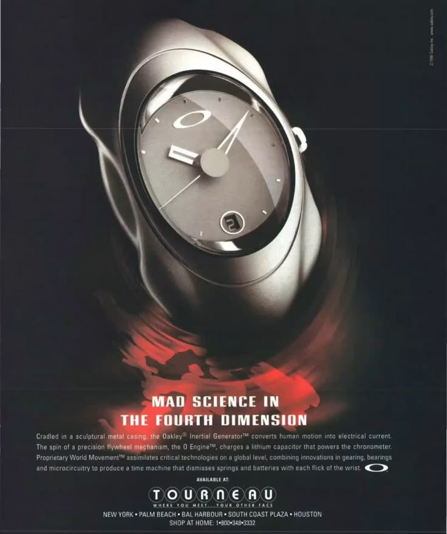
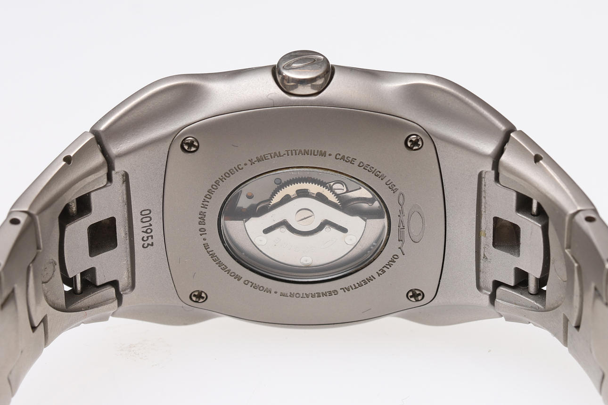
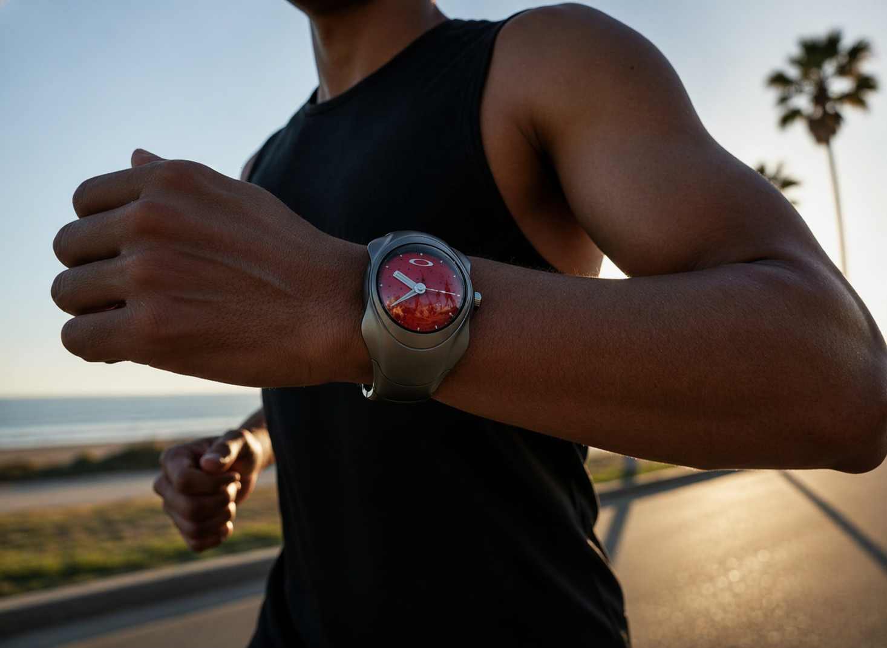
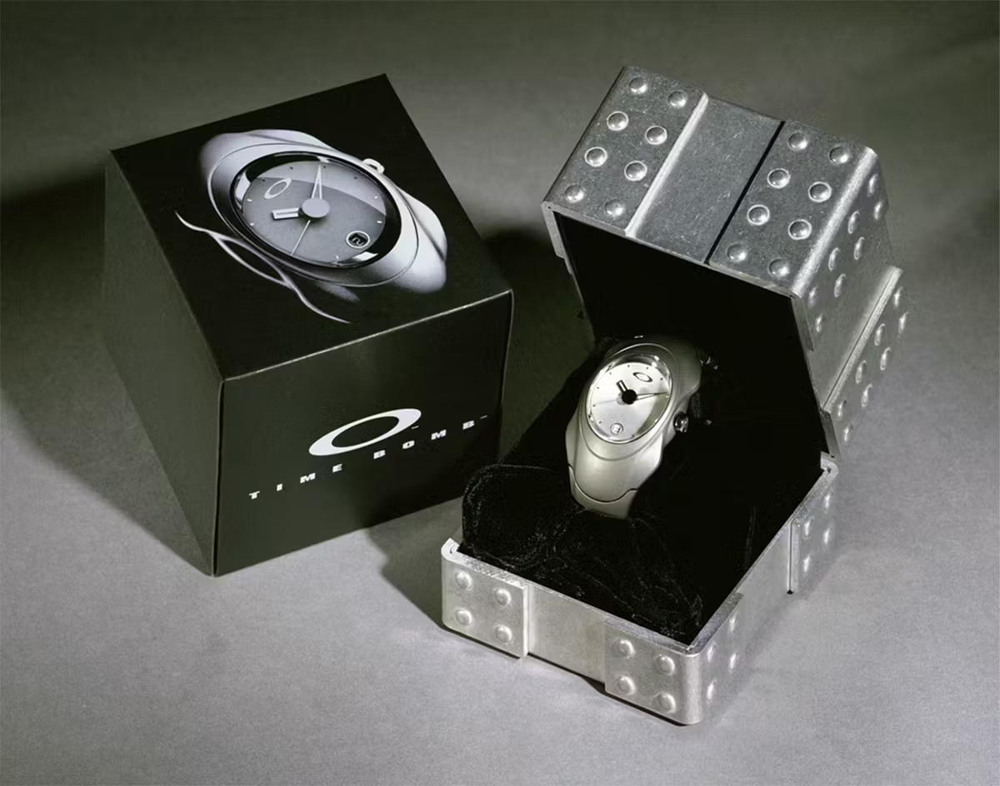

Mad
Science.
The Oakley Time Bomb doesn't just sit on the wrist counting seconds, it draws energy from the movement of the person wearing it. Motion becomes energy. Energy becomes time.

Inertial Generator® & O Engine®
Inside the Time Bomb, a precision flywheel begins to spin with even the smallest movement of the wrist. This rotating mass drives a micro generator, producing electricity that is captured and stored in an internal energy cell.
Oakley named this system the Inertial Generator®, paired with the O Engine®, a multi directional flywheel designed to respond fluidly to real world motion. Instead of storing energy as mechanical tension, the system channels it through electromagnetism.
Meets Motion.
Behind the kinetic energy system lies a quartz regulator operating at 32,768 oscillations per second, combining physical motion with highly stable electronic timekeeping. A two pole step motor drives the hands with steady precision.

Powered by the Rhythm of Wear.
If the watch has been left unused, it can be brought back to life through motion. A few deliberate swings set the internal rotor in motion, generating enough energy to restart the system. As soon as the second hand resumes its steady one second rhythm, the mechanism has regained its footing.

Built for the Real World.
The Time Bomb is designed to operate reliably across a wide range of conditions. It performs best between 5°C and 35°C but tolerates more extreme temperatures from -10°C to 60°C. Despite its robust construction, the internal system remains finely tuned.

Presence in Form and Function.
Everything about the Time Bomb is deliberate, from the weight of the materials to the architectural structure of the case. The design doesn't hide its purpose.
It feels engineered rather than styled, shaped by function as much as by aesthetics. You can sense that something is happening inside, that motion is being captured and transformed. The result is a watch with a strong physical presence, one that communicates its inner workings without needing to expose them.
"Motion becomes energy.Oakley Time Bomb — The Machine That Feeds on Motion
Energy becomes time."